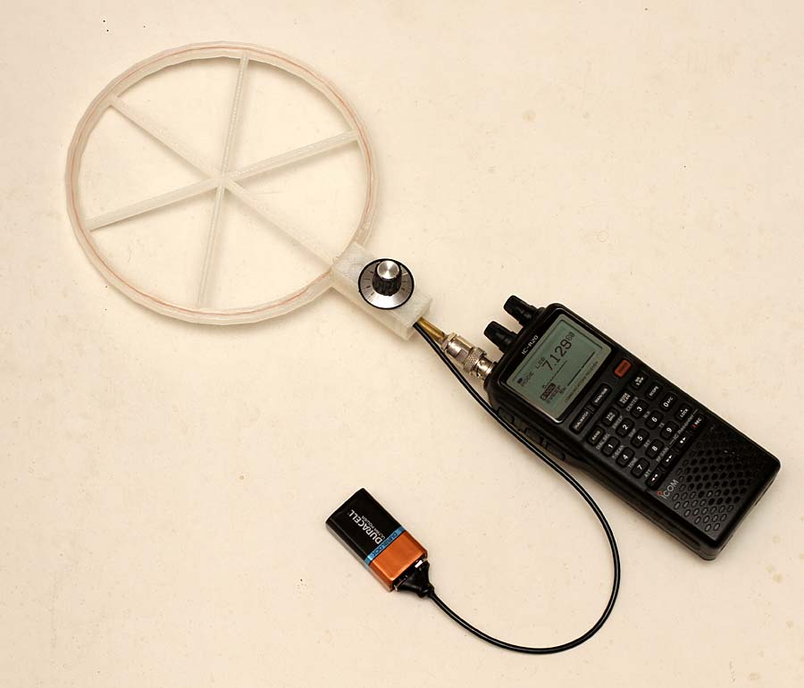
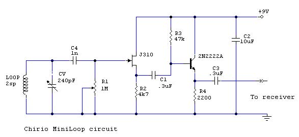
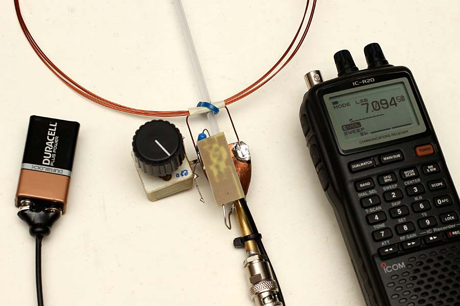
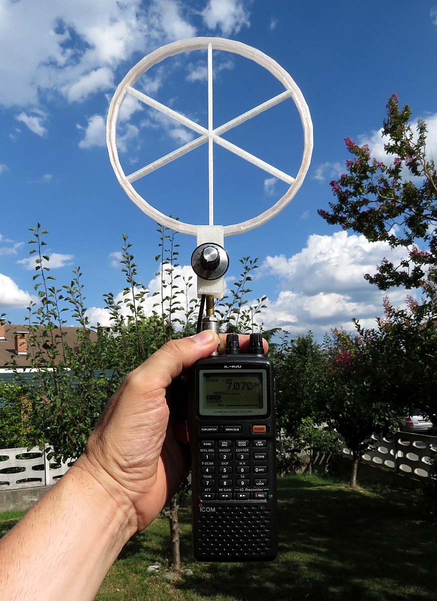

Radio & antenne
Chirio Mini Loop
Antenna attiva per Banda 20-40-80mt
Indice della pagina
Agosto 2016
Antenna LOOP Attiva, di piccole dimensioni, adatta alla ricezione di segnali in banda HF. Rispetto alla MiniWhip la Loop è una antenna a risonanza, richiede pertanto un circuito di accordo per "sintonizzare" al meglio l'antenna sulla frequenza di ricezione. La banda passante è tipicamente ridotta, qualche MHz, pertanto questa non è da considerare una antenna a larga banda come la MiniWhip.

Questa versione è realizzata con telaio in ABS, stampato in 3D, è di piccole dimensioni con bobina diametro 16cm, vuole essere una antenna portatile, le dimensioni e peso sono di poco superiori alla MiniWhip SR per scanner.
E' stato scelto di centrare la frequenza di funzionamento sulle bande più comunemente usate dai Radioamatori, quali 20, 40 e 80 metri pari a 14, 7 e 3,5 MHz.
E' possibile realizzare una Loop per l'ascolto delle Onde Medie oppure per le VLF fino a 10 kHz ma la bobina di accordo deve essere realizzata con parecchie decine di spire e se usato un condensatore variabile (tipo in aria) il valore della capacità non è facilmente reperibile in commercio. E' necessario usare diodi Varicap.
Un confronto diretto con la MiniWhip porta subito a dire che la Loop è meno rumorosa, e in certi casi la si può anche usare dentro casa.
Schema elettrico

Schema elettrico antenna attiva MiniLoop versione condensatore variabile.
- Il circuito risonante è composto dalla bobina Loop e dal condensatore variabile, il condensatore serve per variare le frequenza di risonanza.
- Il condensatore variabile da 240-280pF può essere recuperato da una vecchia radiolina AM. Il valore minimo dovrebbe arrivare a 10-15pF, altrimenti non si raggiunge l'accordo oltre i 14 MHz. Eventualmente per salire in frequenza si avvolgono solo 3 spire, o per scendere sotto ai 3,5 MHz si va sulle 5 spire. Vedi tabella.
- La resistenza R1 (trimmer) serve ad attenuare il segnale entrante anche detta "Q killer", va tarata per avere la migliore ampiezza senza arrivare alla saturazione che può fare innescare oscillazioni sul FET, il valore corretto può essere da 10K a 100K ohm. Per chi non ha problemi di spazio si può anche adottare un potenziometro per regolare ogni volta sempre al massimo la sensibilità di accordo.
- L'amplificatore a FET avendo alta impedenza non va a condizionare l'accordo dell'ingresso, il secondo stadio con 2N2222A amplifica il segnale di 10-15dB.
- Con batterie 9V l'assorbimento è di 5-8mA pertanto una batteria alcalina dura parecchie ore.
- La banda sintonizzabile è molto in funzione dei valori usati e delle capacità parassite in gioco, non è garantito che si possano ricevere e sintonizzare tutte e tre le bande. Localmente da rivedere l'avvolgimento, oppure aggiungere dei condensatori in parallelo o in serie al CV per rientrare in banda.
Caratteristiche

- Con batteria 9V l'assorbimento è di 5mA circa.
- Banda passante da 3,5 MHz a 14,5 MHz (4 spire diam. 16cm)
- Larghezza di banda sul punto di risonanza 500 kHz
- Impedenza uscita è di 200 ohm adatta un po’ per tutti gli ingressi ricevitore.
Costruzione Bobina
- L'antenna provata è realizzata avvolgendo 4 spire di filo rame smaltato diam. 0,5mm su un supporto di diametro 16cm, così otteniamo una "sintonia" da 3,5 a 14,5 MHz mentre per altre sintonie sempre con diametro 16cm, vedere la seguente tabella.
|
Frequenza in funzione del numero spire antenna |
|||
|---|---|---|---|
|
n. spire |
f min |
f max |
Capacitor |
|
200 |
20 kHz |
200 kHz |
100-2000pF |
|
50 |
300 kHz |
1600 kHz |
15-240pF |
|
15 |
1 MHz |
4.5 MHz |
15-240pF |
|
4 |
3,5 MHz |
14,5 MHz |
15-240pF |
|
1 |
14 MHz |
50 MHz |
15-240pF |
I valori sono approssimativi in quanto il campo di frequenze dipende dal diametro del filo, dal tipo di isolamento, dal condensatore variabile e da come viene assemblato tutto il circuito. Per ascoltare le Onde medie e VLF utilizzare filo smaltato di piccolo diametro minore di 0,1mm o meglio del filo di Litz.
Confronto segnali:
Segnale presente sulla Mini-LOOP, la sintonia è centrata su 7100 kHz si vede chiaramente la banda di ricezione rispetto alla MiniWhip è più ristretta, attorno al punto di sintonia. L'antenna è stata montata esterno casa su un palo in PVC da 2mt.
{kind=link}
Segnale presente sulla Chirio Mini-Whip, si vedono tutte le frequenze da 0 a 20 MHz. L'antenna è stata montata esterno casa su un palo in PVC da 3mt.

Consigli per usare la MiniLoop:
- Antenna adatta per uso portatile esterno, va anche bene fissarla in verticale su un ricevitore, di più grosse dimensioni, magari con una prolunga rigida per i connettori di antenna.
- La MiniLoop si presenta con caratteristiche di modesta direzionalità, ruotando sul proprio asse verticale l'antenna è possibile centrare meglio il segnale e verificare l'angolo di ricezione, non avendo un riflettore come le antenne Yagi, non è possibile sapere la provenienza ma solo l'angolo di emissione.
- Tramite manopola si effettua la sintonia, per avere il massimo segnale, ogni volta che si cambia sintonia sulla radio è necessario ricercare il segnale migliore.
- A richiesta si può inserire un piccolo deviatore per avere gamma alta e gamma bassa, così da coprire con una sola antenna le gamme, 3,6 - 7 e 14 MHz

- In questo ultimo periodo del 2015 ci sono spesso condizioni di scarsa propagazione, dovuto alle "Macchie Solari" che potrebbero annullare i segnali ricevibili dalla MiniWhip, è consigliabile consultare il sito http://www.hamqsl.com/solar.html per verificare le condizioni della propagazione per le varie bande.
Consigli per ascolto: stazioni, bande, frequenze, orari e stagioni.
- Associazione Italiana Radioascolto http://www.air-radio.it/
- International Shortwave Broadcast Bands http://www.hamuniverse.com/shortwavebandfreqs.html
- RADIO NEW ZEALAND INTERNATIONAL http://www.rnzi.com/pages/listen.php
- Manuali e schemi per radioamatori, CB e BCL http://www.radiomanual.eu/
© Roberto Chirio: all rights reserved.